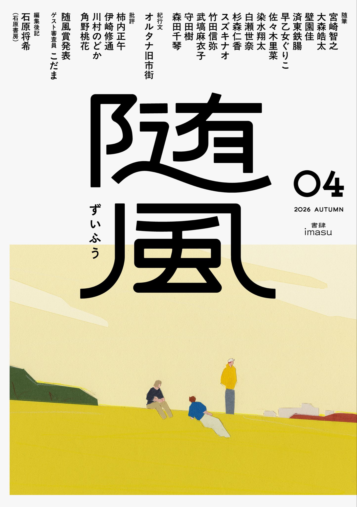

『随風04』に随筆を寄稿しました。テーマは「非日常」です。
「非日常」という言葉を使わず、「私にとっての非日常」を説明せず、
どうやったら「非日常」というテーマの随筆を成立させられるか？
ということに挑戦した、私なりの実験作となります。
ぜひ誌面でご覧いただければ幸いです。
（以下、版元HPより引用）
装画
坂内拓
価格
2,000円＋税
ISBN
978-4-909868-28-2
Cコード
0095
判型
A5判 縦148mm 横210mm 160ページ
内容紹介
随筆復興を推進する文芸誌『随風』。第４号は「非日常」がテーマ。
武塙麻衣子、スズキナオ、済東鉄腸、白瀬世奈らを執筆陣に迎える。
こだまをゲスト審査員に迎えた随筆新人賞・随風賞の受賞作および選評も掲載。
目次
巻頭随筆 宮崎智之
随筆特集：テーマ「非日常」
大森皓太
壁園佳
済東鉄腸
早乙女ぐりこ
佐々木里菜
染水翔太
白瀬世奈
杉森仁香
スズキナオ
竹田信弥
武塙麻衣子
守田樹
森田千琴
紀行文
オルタナ旧市街
批評
柿内正午
伊崎修通
川村のどか
角野桃花
随風賞発表
ゲスト審査員 こだま
応募全作品講評掲載
編集していない編集者の編集後記
石原将希（石原書房）
2026.09.20
文芸誌『随風04』に寄稿しました
